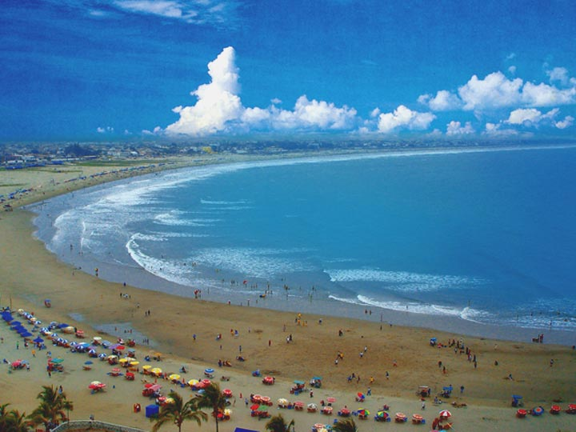

- 


General Villamil más conocido como Playas, pertenece a la provincia del Guayas. La ciudad está ubicada a 96 kilómetros de Guayaquil la cabecera provincial, posee 14 Km. de hermosas playas que han sido por mucho tiempo el destino turístico de muchas personas cautivadas por la belleza natural y las cálidas aguas que bañan sus costas. Es un balneario tradicional para los guayaquileños y la sierra sur del Ecuador, ofreciendo a los turistas diferentes actividades y deportes acuáticos como el surf, buceo, body–board y pesca deportiva. La temporada de costa va de enero a abril y la época de sierra de julio a septiembre, en estas dos temporadas el balneario tiene más movimiento, que permite que nuevos locales se abran y el pueblo se vuelva dinámico.